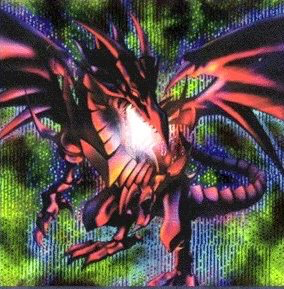

Red-Eyes B. Dragon

Description: "Transforms into ""Red-Eyes Black Metal Dragon when powered up with a ""Metalmorph""."
STATS
ATK: 2400
DEF: 2000DECK COST
Deck Cost per Card: 49EFFECT NOT IMPLEMENTED
Fusion List (17 Possible Fusions)
- Red-Eyes B. Dragon + Bolt Escargot = Twin-Headed Thunder Dragon
- Red-Eyes B. Dragon + Bolt Penguin = Twin-Headed Thunder Dragon
- Red-Eyes B. Dragon + Electric Lizard = Twin-Headed Thunder Dragon
- Red-Eyes B. Dragon + Electric Snake = Twin-Headed Thunder Dragon
- Red-Eyes B. Dragon + Kaminari Attack = Twin-Headed Thunder Dragon
- Red-Eyes B. Dragon + Kaminarikozou = Twin-Headed Thunder Dragon
- Red-Eyes B. Dragon + LaLa Li-oon = Twin-Headed Thunder Dragon
- Red-Eyes B. Dragon + Metal Guardian = Red-Eyes Black Metal Dragon
- Red-Eyes B. Dragon + Meteor Dragon = Meteor B. Dragon
- Red-Eyes B. Dragon + Sanga of the Thunder = Twin-Headed Thunder Dragon
- Red-Eyes B. Dragon + Summoned Skull = B. Skull Dragon
- Red-Eyes B. Dragon + Thunder Dragon = Twin-Headed Thunder Dragon
- Red-Eyes B. Dragon + The Immortal of Thunder = Twin-Headed Thunder Dragon
- Red-Eyes B. Dragon + Thunder Nyan Nyan = Twin-Headed Thunder Dragon
- Red-Eyes B. Dragon + Tripwire Beast = Twin-Headed Thunder Dragon
- Red-Eyes B. Dragon + Metal Dragon = Red-Eyes Black Metal Dragon
- Red-Eyes B. Dragon + Metalmorph = Red-Eyes Black Metal Dragon